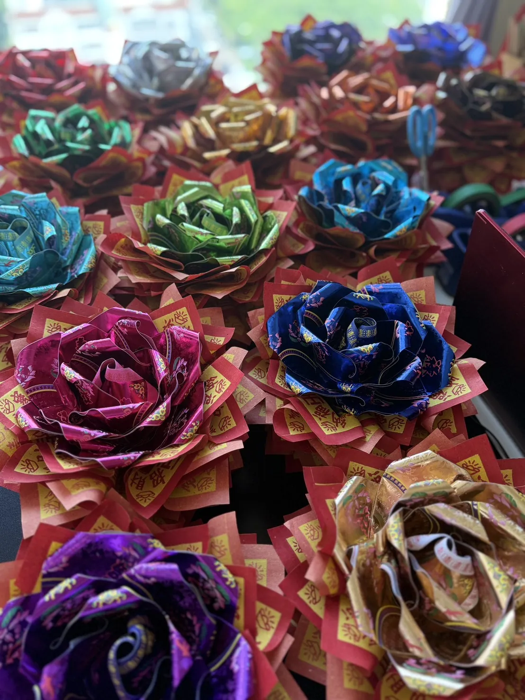

Kaohsiung Joss Paper Art
高雄金紙藝品
金紙紙藝課程與作品訂製
昌久貹金紙藝品文創在高雄定期安排金紙紙藝課程，讓高雄學員能就近學習福願花束、好神花紙藝與祭祀紙藝作品，不用為了一堂課遠赴台中。
課程保留昌久貹一貫的細緻手作與文化轉譯精神，從材料認識、紙藝結構到作品完成，陪你把傳統金紙工藝做成更適合現代生活與祝福心意的作品。
查看課程資訊 LINE 洽詢
高雄定期開課
高雄課程包含福願花束手作班、好神花紙藝課與主題式金紙紙藝教學，適合想接觸金紙美學、祭祀紙藝與祝福作品的學員。
JYCP國際認證
想系統學習金紙紙藝的高雄學員，也可洽詢JYCP國際認證培訓安排，依課程梯次與報名狀況提供合適的學習規劃。
作品訂製服務
昌久貹也服務高雄金紙藝品訂製需求，包含神明花束、祭祀紙藝、祝壽祝賀作品與客製化金紙禮品，歡迎先透過 LINE 溝通用途與預算。
Contact
高雄金紙課程與作品訂製洽詢
若你在高雄，想了解近期課程梯次、福願花束手作班、好神花紙藝課、JYCP國際認證，或需要高雄祭祀紙藝與神明花束訂製，都可以直接與昌久貹聯繫。
回首頁看聯絡資訊 加入 LINE 詢問